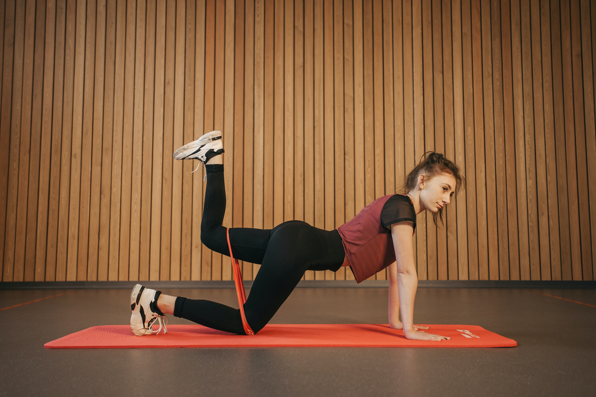
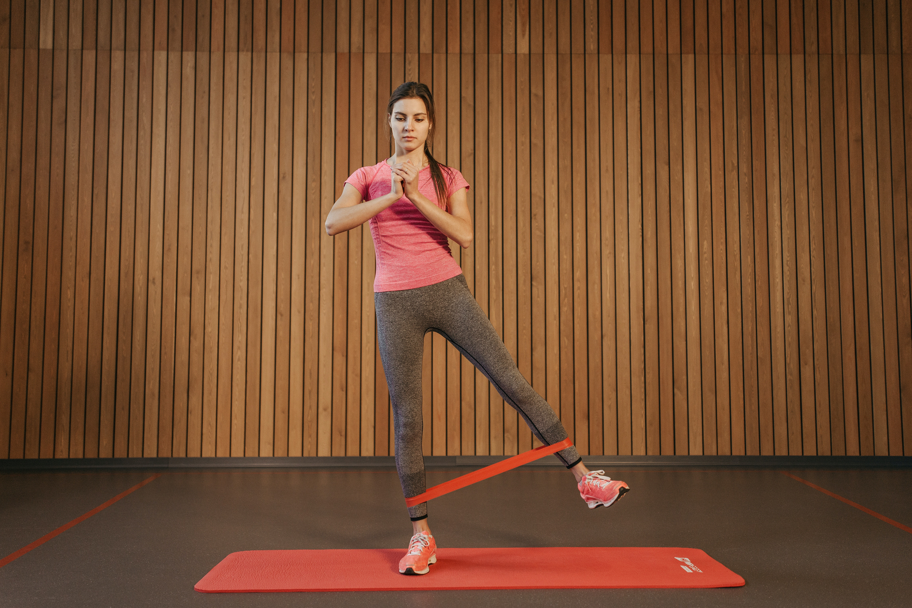
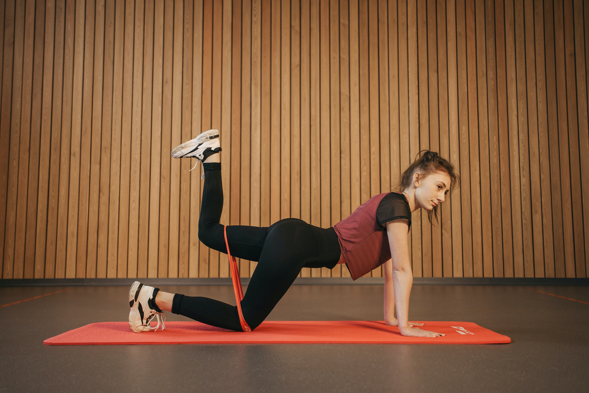
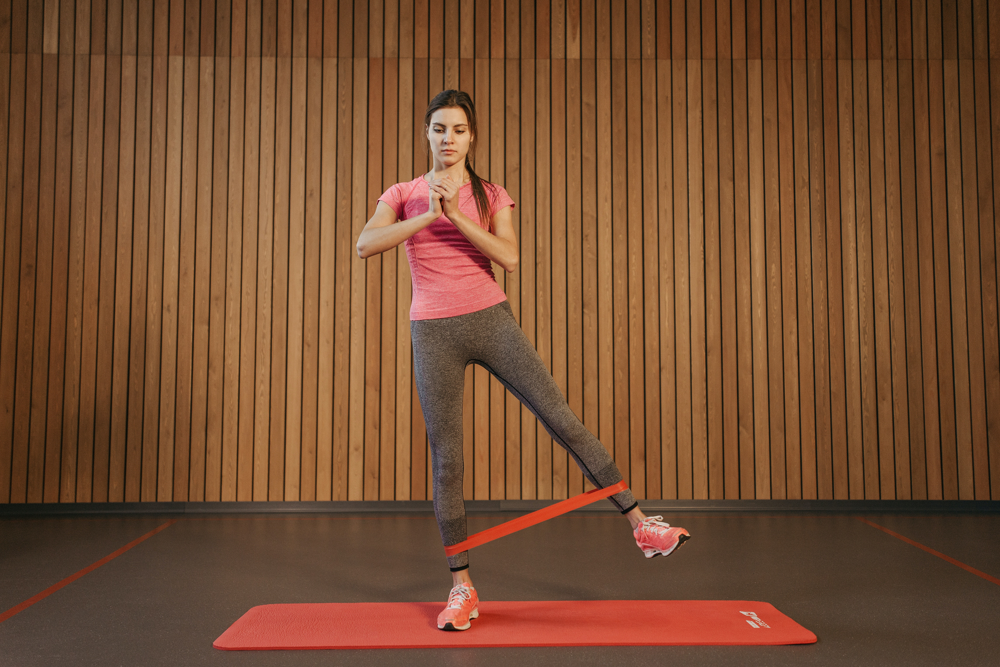

In addition to providing great exercise and developing motor skills, here are 5 hidden benefits of PE!
"INSPIRES SELF DISCIPLINE". Kids who have access to high-quality PE programs are taught life skills that can
be used forever. Implementing good habits and conditioning early in life is a lot easier than “teaching an old
dog new tricks.” For example, think of a middle school student participating in a teaching unit based on the
fundamentals of running. The student finds that over the course of a month, their mile time decreased by three
minutes and they no longer needed to walk to take breaks. The student may become an avid walker or runner,
inspired by running around a school track!
"IMPROVES PEER RELATIONSHIPS". The team-building process enhances communication skills and the skills
required to get along and cooperate with students of varying backgrounds and personalities. Additionally, physical
education can be a major force in helping children to successfully socialize with others and provides an environment
to learn positive people skills. Not every child has the opportunity to be on a team outside of school. So being on
a volleyball or softball team during a PE class creates the opportunity to work together, cheer on teammates, and
share the thrill of victory or the agony of defeat with classmates.
"PROVIDES STRESS RELIEF". Student stress levels are at an all-time high. Involvement in sports, recreational
activities, or other forms of physical fitness provide a proven method of stress relief and act as an outlet for releasing
tension and anxiety. It is an established scientific fact that regular exercise creates and releases serotonin which in
turn helps alleviate stress, improves mood, and generally makes you feel better! Many students may only exercise in PE class,
making this time even more important!
"TEACHES GOAL SETTING". When students set goals and monitor their fitness along the way, they assume more responsibility
for their own health. They also gain a strong sense of competence when they recognize improvements, so their motivation goes up.
For instance, PE students often participate in jump roping. Having these students learn the fundamentals, and then increase their
jump roping endurance by minute intervals can teach a student that setting reasonable goals can be achieved through perseverance
and a little sweat!
"HELPS STUDENTS ACHIEVE BETTER GRADES". The research and evidence are overwhelming, proving that kids who are active, are
better students. Period. Check out these 15 studies conducted by universities such as Dartmouth and the American Academy of Pediatrics.
The Dartmouth study suggests that 12 minutes of exercise can actually improve reading comprehension! Physical education is an integral
part of the total education of every child from kindergarten through college. A high-quality physical education program is needed to
increase physical competence, health-related fitness, motivation and enjoyment of physical activity for all students so that they can
be physically active for a lifetime.
Below are pictures showing involvement in some physical education/physical exercise. Please, enjoy!
 


